TP2 - Architectures
Architecture Monolithique
Définition
Une architecture où toute l'application (interface utilisateur, logique métier, accès aux données) est déployée comme un seul bloc.
Caractéristiques
- Un seul artefact déployable
- Fort couplage entre composants
- Déploiement et monitoring centralisés
- Scalabilité par réplication complète (scale-out) ou scale-up
Schéma (Mermaid)

Chemin: « Un utilisateur consulte la liste des événements »
- L'utilisateur envoie une requête HTTP GET
/events vers le serveur.
- Le monolithe reçoit la requête, exécute la logique métier pour récupérer les événements.
- La couche persistence interroge la base de données et renvoie les données.
- Le monolithe formate la réponse (JSON/HTML) et la renvoie à l'utilisateur.
Avantages / Inconvénients (pour le mini-système d'événements)
- Avantages : simplicité de développement et de déploiement, faible overhead opérationnel pour un petit projet.
- Inconvénients : évolutivité limitée, risque de régression globale lors d'un changement, déploiement moins flexible.
Exemples d'utilisation
- MVP, prototypes, petites applications internes.
Sources
- Notes de cours et documentation d'architecture (divers cours d'architecture logicielle).
Structure proposée pour le mini-système
controllers/ : routes HTTP et contrôleursservices/ : logique métier (inscription, connexion, events)repositories/ : accès base de donnéesmodels/ : entités (User, Event)
Hébergement et environnement
- Serveur unique (VM ou instance PaaS like Heroku, Render, Railway)
- Base de données relationnelle (Postgres, MySQL) accessible par le serveur
- Backup et monitoring centralisés
Détails fonctionnels (pas à pas)
-
Inscription (POST /signup)
- Le contrôleur reçoit la requête, valide les champs.
- Le service
User crée l'entité et appelle le repository pour persister.
- La base renvoie un id ; le service renvoie 201 + profil public.
-
Connexion (POST /login)
- Le contrôleur reçoit identifiants.
- Le service
Auth vérifie le mot de passe via le repository.
- Si ok, le service émet un token (JWT) ou crée une session côté serveur.
-
Création d'un événement (POST /events)
- Contrôleur vérifie l'authentification.
- Service
Events valide et persiste l'événement via repository.
- Réponse 201 avec l'ID de l'événement.
-
Listing des événements publics (GET /events)
- Contrôleur appelle le service
Events.
- Service exécute une requête SQL optimisée (pagination, index).
- Résultat retourné en JSON.
-
Consultation d'un événement (GET /events/{id})
- Contrôleur appelle
Events.findById(id).
- Le repository récupère l'entité, le service applique règles de visibilité et renvoie.
Considérations opérationnelles
- Sauvegarde et restauration centralisées (point critique).
- Déploiement : un seul rollback remplace l'app entière.
- Tests : possibilité d'exécuter tests d'intégration sur l'artefact complet.
Architecture Microservices
Définition
Une architecture composée de plusieurs services autonomes, chacun responsable d'un domaine métier précis et communiquant par des API légères.
Caractéristiques
- Services indépendants, déployables séparément
- Communication via API REST/HTTP ou messages
- Chaque service peut avoir sa propre base de données
- API Gateway possible pour routage, authentification et orchestration
Schéma (Mermaid)

Chemin: « Un utilisateur consulte la liste des événements »
- L'utilisateur envoie GET
/events à l'API Gateway.
- L'API Gateway valide l'authentification (via le Service Auth ou token JWT).
- La Gateway route la requête vers le Service Events.
- Le Service Events interroge sa base de données (EventsDB) et renvoie la liste.
- La Gateway renvoie la réponse au client.
Avantages / Inconvénients (pour le mini-système d'événements)
- Avantages : possibilité de scaler indépendamment le service Events, déploiements ciblés, tolérance aux pannes locales.
- Inconvénients : complexité opérationnelle (orchestration, monitoring), latence réseau, gestion des transactions distribuées.
Exemples d'utilisation
- Grandes applications distribuées, plateformes nécessitant scalabilité granulaire.
Sources
- Notes de cours et documentation microservices.
Structure et déploiement
- Conteneurs/Pods Docker pour chaque service (
auth, events, notifications, gateway).
- Orchestration Kubernetes / Docker Compose pour développement.
- Bases de données séparées :
auth-db, events-db (chaque service son modèle).
Environnements hébergement
- API Gateway (Load Balancer / Cloud Gateway) en frontal
- Services déployés sur clusters (K8s, ECS) ou fonctions serverless
- Observabilité : centralisé (Prometheus, Grafana, ELK)
Flux détaillés par fonctionnalité
-
Inscription (POST /signup)
- Requête envoyée à
auth via la Gateway.
auth valide et persiste l'utilisateur dans auth-db.auth peut publier un événement UserCreated (optionnel).
-
Connexion (POST /login)
- Requête vers
auth qui valide et renvoie un token JWT.
- Token utilisé pour appels ultérieurs vers
events via la Gateway.
-
Création d'un événement (POST /events)
- Client appelle
gateway avec token.
- Gateway route vers
events service.
events persiste dans events-db et peut publier EventCreated pour autres services.
-
Listing des événements publics (GET /events)
- Client appelle
gateway.
- Gateway authentifie (ou pas) et route vers
events.
events retourne la liste depuis events-db.
-
Consultation d'un événement (GET /events/{id})
- Route via Gateway →
events.findById(id) → events-db → réponse.
Cohérence et transactions
- Transactions limitées au sein d'un service; pour opérations multi-services, utiliser sagas ou event-driven compensations.
Avantages / Inconvénients techniques (plus de détails)
- Observabilité et traçage requis (Distributed Tracing)
- Tests d'intégration plus complexes (mocking de services)
Architecture Event-Driven
Définition
Une architecture reposant sur des événements : des émetteurs publient des événements sur un bus, et des consommateurs y réagissent de façon asynchrone.
Caractéristiques
- Découplage fort entre producteurs et consommateurs
- Traitement asynchrone et par lots possible
- Bonne extensibilité (ajout de consommateurs)
- Nécessite un bus (RabbitMQ, Kafka, etc.) ou broker
Schéma (Mermaid)

Chemin: « Un utilisateur consulte la liste des événements »
Cas synchronisé (lecture):
- L'utilisateur envoie GET
/events au Service Events (ou via API Gateway).
- Le Service Events interroge sa base de données EventsDB et retourne la liste.
Cas création (exemple d'émission d'événement):
- L'utilisateur crée un événement via POST
/events.
- Le Service Events persiste l'événement puis publie
EventCreated sur le bus.
- Les consommateurs (Notifications, SearchIndex, Analytics) reçoivent l'événement et effectuent leurs traitements (envoi d'email, mise à jour d'index, etc.).
Avantages / Inconvénients
- Avantages : découplage, scalabilité et flexibilité pour ajouter des fonctionnalités asynchrones.
- Inconvénients : complexité (gestion du broker, garantie d'acheminement), debugging plus difficile, latence pour traitements asynchrones.
Exemples d'utilisation
- Systèmes nécessitant notifications en temps différé, pipelines de traitement, analytics.
Sources
- Documentation sur architectures événementielles (Kafka, RabbitMQ, articles de patterns).
Structure et composants
- Broker / Event Bus (Kafka, RabbitMQ, AWS SNS/SQS)
- Producteur principal :
events service
- Consommateurs :
notifications, search-index, analytics, read-model-updater
- Read-model (index optimisé pour lecture) mis à jour par consommateurs
Hébergement
- Broker sur cluster dédié (managed Kafka, RabbitMQ cluster) ou service cloud
- Consumers et producers déployés en conteneurs/Pods
- Read-model servi par un service HTTP pour lectures rapides
Flux détaillés par fonctionnalité
-
Inscription (POST /signup)
auth persiste l'utilisateur puis publie UserCreated.- Un consommateur
welcome-email reçoit l'événement et envoie mail.
-
Connexion (POST /login)
- Auth reste synchrone : vérification et émission de token JWT.
-
Création d'un événement (POST /events)
events service persiste l'événement puis publie EventCreated.- Consumer
read-model-updater met à jour l'index de lecture.
- Consumer
notifications notifie abonnés si nécessaire.
-
Listing des événements publics (GET /events)
- Lecture sur le
read-model (fast path) : pas besoin d'interroger le broker.
- Si pas d'index, service
events sert depuis sa propre DB (synchronisation éventuelle).
-
Consultation d'un événement (GET /events/{id})
- Lecture depuis read-model ou
events service selon SLA de fraîcheur.
Garanties et gestion des erreurs
- At-least-once delivery vs exactly-once : choix selon broker et idempotence des consumers.
- Idempotence requise pour consumers (ex: updates d'index).
- Stratégies de retry, DLQ (dead-letter queue) pour messages non traitables.
Avantages / Inconvénients détaillés
- Avantages : excellente extensibilité pour features asynchrones, découplage, ajout de nouvelles reactions sans changer producers.
- Inconvénients : complexité opérationnelle (broker), latence pour traitements consommateurs, difficulté de debug end-to-end.